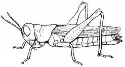

New Senior School Biology Practical Activity & Work Book Two
Chapter
8
PEST AND DISEASES OF CROPS
Notable Concepts
What is a pest?
Classification of pest
Life cycle of pest
Control of pest
* * * * * * * * * * * * *
fig8.1 Rice weevil: An insect pest
Background Information
What is a pest? A pest is any organism (plant, animal, fungi, virus etc) which is injurious or harmful to cultivated plants and their products. Plant pests are called weeds.Examples of pests are
Insects: such as aphids, grasshoppers, caterpillar etcMammals such as rats, rabbits, bats, fox etc
Classification of pests
Pests can be classified using certain basis1. The part of the plant they attack. For example: stem borers, leaf feeders , young short feeders, root feeders and seed feeders
2. We can also classify pests based on the organism type. Here we have plant pests and animal pests. Also under animal pests we can classify further to
Invertebrates pests example insects, nematodes etc
Vertebrate pests which include birds such as pigeon, weaver, bird etc
Mammals such as rats, rabbits, monkeys, bats etc.
Mode of feeding
Pests
Effects
Crops, their activities affect
Control measures
Boring and chewing
Maize Weavil
Boring and chewing
Bean Weavil
Eats and damages stored beans
Beans
Fumigation and use of insecticide
fig8.2 beetle an insect pest
fig8.3 grasshopper
an insect pest

fig8.4 caterpillar
an insect pest
Bird Pests
Pest
Effects
Crops, Its activity Affects
Control
Bush fowl
Decreases crop yields through its damage to crops
Corn, groundnut cassava
Use of Objects or Mechanical devices that can Make a noise
Quelea bird
Cause decreased crop yield by feeding on grains
Maize, Millet, guinea Corn, rice
Spraying with chemicals
Guinea fowl
Causes a decrease in crop yield
Groundnuts
Scaring devices and loud noise
Village Weaver bird
Damages crops (Maize, rice) and reduces crop yield
Rice, Maize
Spraying of chemicals and uses of explosives
Mammalian Pests
Pest
Effects
Crops, Its activity Affects
Control
Bat
Damages riped fruits e.g mangoes
Mango, Pawpaw
Shooting and setting traps
Bush rat
Cause crop damages and destruction
yam cassava
Weeding and clearing Vegetation within and around the farm.
Monkey
Decreases crops yield at harvest
Maize, Bananna fruit
Chasing away, shooting and setting traps
West African ground squirel
Brings losses to farmers through the eating of yam and cassava
Yam, cassava
Shooting and chasing away by man.
fig8.5 Bat
a mammalian pest
fig8.6 squirrel,
a mammalian pest
Diseases caused by pests and their agents
Pest not only destroy crops, they also act as disease vector to crops. In the cause of their activities, they transmit or pass on crop diseases. Causative agents of crop disease and be fungi, Bacteria or Virus
Certain crop diseases and their causasive agents are tabulated below
Crop disease
Crop involved
Causative agent
Control
Blast
Rice
Fungus
Use fungicidles and resistant Variety
Rust
Maize
Fungus
Apply resistant Variety use fungicides change planting times
Mosaic
Garden egg plant, cassava, Tobacco, pepper
Virus (Transmitted by Aphids, white flies)
Use plant resistant varieties .Destroy the disease vector
Swollen Shoot disease
Cocoa
Virus (transmitted by mealy bug)
Destroy infected plants.Destroy the vector
Rosette
Groundnut
Virus (Spread by Aphids)
Pullout infected plants, use of healthy seed.Destroy the vector with insecticides
Wilt
Cassava
Bacteria
Resistant varieties Early planting destroying infected crop, use crop rotation scheme.
Blight
Cowpea
Bacteria and Fungi
Disinfect seeds before planting.
Control of Pests
Physical Method: This involves, destroying pest by catching them through traps; burning them and uses of deterrents to scare them away
Cultural Methods: This has to do with the application of farming method or practice in reducing pests. This Method can be: Timing the farming period at a time of reduced pest activities. Use of farming method like crop rotation; Proper spacing of crops etc.
Biological Method: In this method natural enemies or predator of the pests are used to fight them.
Chemical Methods: Chemicals called Pesticides are used to destroy pest and Control their activities.
Prohibitions: Banning materials that will likely introduce Pests and diseases into a place such as country or state.
Pest Resistant Varieties: Planting Pest or disease resistant varieties of crops to reduce pest attacks and activities.
Drying: Proper drying of some crop products before storage can help to reduce their water content and make them more pest resistant. Crops such as beans and maize can be treated in this way.
Quarantine Method: This involves keeping a likely infected plant under a confirmed state waiting for the disease to be noticed and confirmed. Through this, such crop or plant can be sent back or prevented from entering another place to infect other crop.
General questions
1. Crop pest can be plants or animals, plant pest can be called
2. A crop pest which also transmits diseases among crops is known as
The diagram below shows stages in the life cycle of the beetle, use it to answer questions 3-5.
fig8.7:
3. Identify and label the pupal stage
4. What type of crop pest can you categorize the animal?
5. What part of the crop does the organism attack or feed on
6. What part of the crop do locust, grasshoppers and caterpillars usually attack by feeding on it.
7. Reproduction by unfertilized egg which can be found in Aphids is called
8. An Aphid and a locust are insect pests while a bat and bush rat are
9. A guinea fowl is a bird pest which can attack or feed on a plant like
10. A cotton stainer feeds on cotton seeds by piercing and sucking while caterpillars feed on leaves by _________ and _________
biting and chewing
cutting and grinding
sucking and cutting
11. Bean weevils eat and damage stored beans, their pest activities can be controlled by
setting traps and bush cleaning
uses of proper storage and burning
fumigation and use of insecticide
12. Black pod disease of cocoa are spread by
a bacteria
a fungus
a virus
13. Blight' of cowpea can be prevented and controlled by
washing seed and spreading it on the sun
keeping the seeds in a damp shady
Disinfecting seeds before planting
14. Swollen shoot disease and cassava mosaic are viral diseases while blast in rice is caused by
fungi
bacteria
protozoan
15. Chemicals used in pest control are called
16. Stem borers of cereal crops like maize are
Larva
pupa
imago
Use the table below to answer question 17-20 Fill in a right answer for the spaces provided in the table
17 – 20
Pests
Crops they attack
Effect
17
Mealy bug
Cassava
18
Maize weevil
Maize
19
Bush fowl
Groundnut, cassava
20
Okro
Expression Exercise
1) Differentiate between herbicides, fungicides and insecticides using table below
Herbicides
Fungicides
Insecticide
1
2) Write down five insect crop pest that attack crops through biting and chewing and five crops their activities affect
3) List four mammalian pest and two ways of controlling their destructive activities on crops.
4) State one danger of the use of pesticides by farmers
5) Write three crop diseases each that are caused by
a. Virus
b. Fungi
c. Bacteria
6) Explain cultural and biological methods of controlling pests
(a) Cultural methods
(b) Biological methods
7) Explain pest resistant variety as a way of controlling pest activities on crops
Practical Activities
Take a trip (your teacher can take you down) to variety of farmlands where different crops are grown. Carry out the following activities.
1 a. Give a name tag to the farmlands you visited in alphabetical order e.g Farm A, Farm B etc.
b. Collect specimens of the crops you found in these farms and identify each of them with their names
Tabulate your report as shown in the table below:
The Farms
Various specimen of crop found
Farm A
Farm B
Farm C
Farm D
Farm E
Examine each specimen carefully to find out if any is under the attack of a crop pest
If any, identify the plants and plant parts that are under such attacks and the likely or suggested pests that are involved
2. You are provided with an infested corn seed and been seed as specimen A and B respectively
(i) Carefully examine each specimen and answer the following questions based on your Observations
What are the likely pests that are involved in the attack of each specimen
(ii) State one possible crop disease that might have infested the Specimen
(iii) What is the causative organism that is responsible for the disease you stated in (ii)
3.
Identify the larval stage in the life history of the weevil shown below
Which stage(s) of the weevil is it destructive to cereal crops
fig8.8:
3. A. The diagram in fig 8.9 is an aphid, state the name of one crop it attacks
B. What type of metamorphosis occurs in its life cycle (i.e. Aphid life cycle)